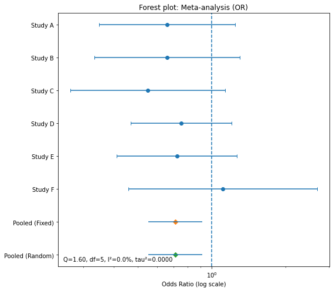

import numpy as np
import pandas as pd
import matplotlib.pyplot as plt
from math import sqrt, log, exp0. 정의
Meta analysis: 별도의 연구 결과를 통계적으로 결합하는 과정으로 여러 독립적인 연구 결과를 하나로 통합하는 작업
- 문헌 검토
- 데이터 시트 작성
- 효과 크기 계산
- 메타 분석 결과 해석
1. 문헌 검토
- 연구 질문 정의
- 키워드 식별
- 검색 전략 정의
- 수집된 논문에서 분석 결과 추출
2. 데이터 시트 작성
- 분석 유형
- 여러 연구해서 결론이 내려진 분석 결과를 수식을 통한 계산 작업을 거쳐 표준화된 값으로 변환
- 데이터 유형
- 범주형 유형
- 명목 척도
- 순위 척도
- 연속형 유형
- 등간 척도
- 비율 척도
- 범주형 유형
3. 효과 크기
ttest,anova,correation analysis 등에서 제시된 다양한 연구결과로 아래를 계산
주의할 점은 표본이 작은 경우 효과 크기가 과대추정될 수 있으니 샘플 수를 확인해야 한다는 것
효과 크기
- 표준화된 평균차이
- Cohen
- 두 집단의 비율
- Odds ratio
- 두 변수 간의 상관관계
- Correlation
- 표준화된 평균차이
Cohen’s Effect size: \(d = \frac{\bar{X} - \bar{X}}{S}\)
- <=0.2 작은 효과, 0.2~0.8 중간 효과, >=0.8 큰 효과
연구 결과에서 효과 크기, 신뢰구간, 가중치 해석
- 가중치
- 샘플 수가 달라서 효과 크기 계산에 영향을 줄 수 있어서 조정해줘야 함
- \(J = (1-\frac{3}{4df-1})\)
- Hedges’ Effect Size = \(g = d\times J\)
이질성 검증
- \(I^2 = \frac{Q-df}{Q} \times 100\)
- 0% ~ 25% 이질성이 낮음
- 25% ~ 75% 중간정도의 이질성이 있음
- 75% ~ 100% 이질성이 높음
- \(I^2\)가 50% 이상이고, 이질성 검증의 유의확률 p-value가 p<0.1인 경우 효과 크기의 이질성이 있는 것으로 판단하고 고정 효과 모델 대신 랜덤 효과 모델 선택
- 랜덤 효과 모델은 더 보수적인 신뢰구간 제공
- 고정 효과 모델 선택하려면 동일한 모딥단에서 추출한 표본의 경우에 사용 가능.
- 일반화 어려움
- 랜덤 표과 모델
- 메타 분석은 다양한 연구를 포함하기 때문에 표본 집단이 다른 경우가 많다.
출판 오류,평향 분석
연구 결과의 신뢰성과 타당성을 보장하기 위함
메타 분석이 실제 효과를 과대 또는 과소 추정할 수 있음
좌우 대칭으로 나오면 편향이 없는 것으로 보지만, 비대칭 분포를 가지면 편향이 있는 것으로 봄
일반적으로 안전계수 값이 \(5 \times N + 10\) 여기서 N은 메타분석 논문수 보다 크면 대체로 안전하다고 판단
4. 실습
- Import
- 예제 데이터
- a = treatment effect
- b = treatment non-events
- c = control events
- d = control non-events
df = pd.DataFrame({
"study": ["Study A","Study B","Study C","Study D","Study E","Study F"],
"a": [22, 18, 15, 40, 27, 12],
"b": [78, 82, 75, 160,123, 68],
"c": [30, 25, 24, 50, 35, 11],
"d": [70, 75, 66, 150,115, 69],
})
df| study | a | b | c | d | |
|---|---|---|---|---|---|
| 0 | Study A | 22 | 78 | 30 | 70 |
| 1 | Study B | 18 | 82 | 25 | 75 |
| 2 | Study C | 15 | 75 | 24 | 66 |
| 3 | Study D | 40 | 160 | 50 | 150 |
| 4 | Study E | 27 | 123 | 35 | 115 |
| 5 | Study F | 12 | 68 | 11 | 69 |
- 효과 크기 계산
def log_or_and_se(a,b,c,d, add0_5=True):
if add0_5 and min(a,b,c,d) == 0:
a, b, c, d = a+0.5, b+0.5, c+0.5, d+0.5
logOR = log((a*d)/(b*c))
SE = sqrt(1/a + 1/b + 1/c + 1/d)
return logOR, SEZ = 1.96 # 95% CIdf["logOR"], df["SE"] = zip(*df.apply(lambda r: log_or_and_se(r.a,r.b,r.c,r.d), axis=1))
df["logLCL"] = df["logOR"] - Z*df["SE"]
df["logUCL"] = df["logOR"] + Z*df["SE"]# OR 스케일로 보기
df["OR"] = np.exp(df["logOR"])
df["OR_LCL"]= np.exp(df["logLCL"])
df["OR_UCL"]= np.exp(df["logUCL"])df.round(3)| study | a | b | c | d | logOR | SE | logLCL | logUCL | OR | OR_LCL | OR_UCL | |
|---|---|---|---|---|---|---|---|---|---|---|---|---|
| 0 | Study A | 22 | 78 | 30 | 70 | -0.418 | 0.325 | -1.056 | 0.219 | 0.658 | 0.348 | 1.245 |
| 1 | Study B | 18 | 82 | 25 | 75 | -0.418 | 0.348 | -1.100 | 0.264 | 0.659 | 0.333 | 1.303 |
| 2 | Study C | 15 | 75 | 24 | 66 | -0.598 | 0.370 | -1.323 | 0.127 | 0.550 | 0.266 | 1.136 |
| 3 | Study D | 40 | 160 | 50 | 150 | -0.288 | 0.241 | -0.759 | 0.184 | 0.750 | 0.468 | 1.202 |
| 4 | Study E | 27 | 123 | 35 | 115 | -0.327 | 0.287 | -0.890 | 0.236 | 0.721 | 0.411 | 1.266 |
| 5 | Study F | 12 | 68 | 11 | 69 | 0.102 | 0.451 | -0.782 | 0.986 | 1.107 | 0.457 | 2.680 |
- 고정효과 메타분석
w_fixed = 1 / (df["SE"]**2)
theta_fixed = np.sum(w_fixed * df["logOR"]) / np.sum(w_fixed) # 가중 평균
se_fixed = sqrt(1 / np.sum(w_fixed))
fixed_L = theta_fixed - Z*se_fixed
fixed_U = theta_fixed + Z*se_fixed
print("Fixed-effect (log scale):", theta_fixed, "±", se_fixed)
print("Fixed-effect (OR):", exp(theta_fixed),
"(95% CI", exp(fixed_L), "to", exp(fixed_U), ")")Fixed-effect (log scale): -0.34053900893309863 ± 0.12983334833335455
Fixed-effect (OR): 0.7113867755772918 (95% CI 0.551555742161936 to 0.9175339966230908 )- pooled OR 통합오즈비 = 0.71
- 1보다 작다는 건 치료가 더 좋은 효과
- 치료군의 사건 발생 odds가 대조군 대비 약 29% 감소
- 95% CI = 0.55, 0.92
- 95% CI가 1을 포함하지 않음
- 따라서 통계적으로 유의한 차이 존재
- 이질성
Q = np.sum(w_fixed * (df["logOR"] - theta_fixed)**2)
df_Q = len(df) - 1
I2 = max(0.0, (Q - df_Q) / Q) * 100 if Q > 0 else 0.0
print(f"Heterogeneity: Q={Q:.2f}, df={df_Q}, I²={I2:.1f}%")Heterogeneity: Q=1.60, df=5, I²=0.0%- 이질성은 1.60
- \(I^2\)으로 보아 효과 크기 차이가 거의 없음.
- 따라서 모든 연구들이 일관된 방향을 보여줌
- 이질성이 낮으므로 고정효과 모델 결과와 랜덤 표과 모델 결과가 거의 동일하게 나올 것으로 예상
- 랜덤 효과
den = np.sum(w_fixed) - (np.sum(w_fixed**2) / np.sum(w_fixed))
tau2 = max(0.0, (Q - df_Q) / den) # between-study variance (DL)
w_random = 1 / (df["SE"]**2 + tau2)
theta_random = np.sum(w_random * df["logOR"]) / np.sum(w_random)
se_random = sqrt(1 / np.sum(w_random))
random_L = theta_random - Z*se_random
random_U = theta_random + Z*se_random
print("Random-effects (log):", theta_random, "±", se_random, " | tau²=", tau2)
print("Random-effects (OR):", exp(theta_random),
"(95% CI", exp(random_L), "to", exp(random_U), ")")Random-effects (log): -0.34053900893309863 ± 0.12983334833335455 | tau²= 0.0
Random-effects (OR): 0.7113867755772918 (95% CI 0.551555742161936 to 0.9175339966230908 )- \(tau^2\) 값으로 보아 betwee-study variance가 거의 없음
- 따라서 pooled OR이 고정 효과 모델과 동일하게 계산된다.
- 포레스트 플롯
y = np.arange(len(df), 0, -1)
fig, ax = plt.subplots(figsize=(8,7))
ax.errorbar(df["OR"], y,
xerr=[df["OR"]-df["OR_LCL"], df["OR_UCL"]-df["OR"]],
fmt='o', capsize=3)
# 고정/랜덤 풀드 효과(다이아몬드 마커)
ax.plot(np.exp(theta_fixed), 0, marker='D')
ax.hlines(0, np.exp(fixed_L), np.exp(fixed_U))
ax.plot(np.exp(theta_random), -1, marker='D')
ax.hlines(-1, np.exp(random_L), np.exp(random_U))
ax.axvline(1.0, linestyle='--')
ax.set_xscale("log")
ax.set_xlabel("Odds Ratio (log scale)")
ax.set_yticks(list(y) + [0, -1])
ax.set_yticklabels(list(df["study"]) + ["Pooled (Fixed)", "Pooled (Random)"])
ax.set_title("Forest plot: Meta-analysis (OR)")
ax.text(0.02, 0.02, f"Q={Q:.2f}, df={df_Q}, I²={I2:.1f}%, tau²={tau2:.4f}",
transform=ax.transAxes)
plt.tight_layout()
plt.show()
- 대부분의 연구 결과가 왼쪽에 위치, OR <1
- pooled fixed, pooled random이 1보다 왼쪽에 위치
- 전반적인 치료가 효과적임을 시각적으로 확인할 수 있음